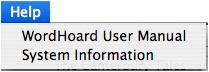
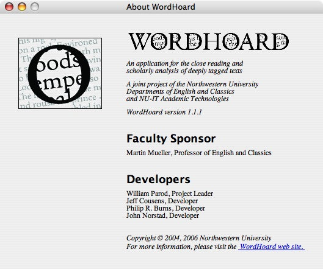
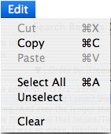
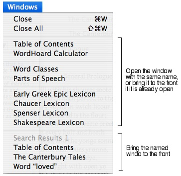
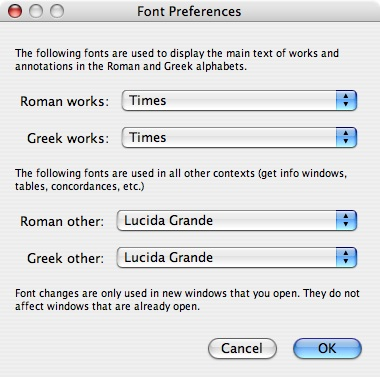
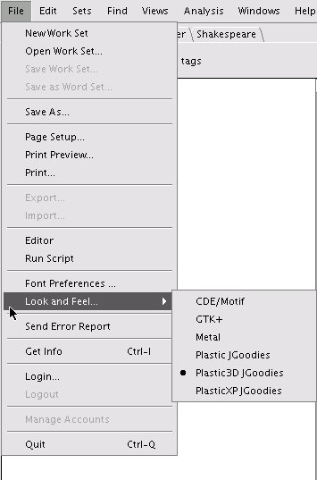

|
|
|
WordHoard uses menus containing commands at the top of each window, or at the top of the screen for Mac users who are using newer systems (those running Apple's J2SE 5.0 Release 4 or later).
Many of the commands have keyboard shortcuts. On the Macintosh, use the Command key for menu command shortcuts (the one with the Apple logo and/or the cloverleaf on it). On Windows and UNIX systems, use the Control key for menu command shortcuts (often labeled "ctrl").
In this manual, we use the term "Command" for this key. For example, the shortcut for the "Quit" is "Command-Q". Windows and UNIX users must remember that this is "Control-Q" on their keyboards.
WordHoard uses many dialogs with buttons appearing at the bottom. On the Mac and on UNIX systems, the "OK" button or other "doit" button is always on the far right, typically with a "Cancel" button immediately to its left. On Windows, whichever button is the default button, which may be either "OK" or "Cancel", is always on the far right.
Both Mac users and Windows users should find that this convention meets their expectations and matches the way other programs work on their systems. When you read this manual, however, you should be aware that a screen shot of a dialog may have the buttons in a different order than what you see on your own screen.
The few people who use both kinds of systems will discover that the buttons are sometimes positioned differently on the two kinds of systems.
To quit WordHoard, use the "Quit" command (Command-Q) in the "File" menu or in the "WordHoard" menu.
WordHoard also quits if and when you close the last open window in the program.
To get help, use the "Help" menu:

To open this user manual, use the "WordHoard User Manual" command. This command opens your preferred web browser (if it isn't already open), brings it to the front, and tells it to display the table of contents page for this manual.
To get information about your system and Java environment, use the "System Information" command. This can sometimes be useful when reporting a problem to the developers.
On Windows and UNIX systems, the "Help" menu contains an additional "About" command to open WordHoard's about box. See the next section for details.
To see WordHoard's about box, use the "About WordHoard" command. This command is in the "Help" menu on Windows and UNIX systems, or in "File" or "WordHoard" menu for Mac users.

To open this user manual, click the blue underlined phrase "WordHoard web site" in the bottom-right corner of the window. This command opens your preferred web browser (if it isn't already open), brings it to the front, and tells it to display the table of contents page for this manual.

The "Edit" menu and the text editing command key shortcuts work the same way they do in all your other programs.
WordHoard uses many different kinds of windows. Sometimes you will find that you have quite a few windows open, with some of them buried beneath other ones. To manage them, use the "Windows" menu:

To close the current window, use the "Close" command (Command-W).
To close all the windows except the Table of Contents window, use the "Close All" command (Shift-Command-W). If the Table of Contents window is not open, a new one is opened.
Each command in the middle section of the menu opens the window with the same name, or brings it to the front if it is already open. Each of these windows is described in separate chapters later in this manual.
The remaining menu items in the bottom section of the menu list all of your currently open windows in alphabetical order. In the example above, there are three total open windows listed. The disabled item is for the window that is currently on top. To bring a window that is buried to the front, select its name in this part of the menu.
See also:
Printing in WordHoard works the same way as in any other program on your system.
To choose a page format, use the "Page Setup" command in the "File" menu. This command displays a system-dependent dialog which lets you set attributes for each page. These attributes differ from printer to printer but typically include:
To preview your print output on Windows or UNIX, use the "Print Preview" command in the "File" menu. On a Mac, there is no "Print Preview" command because previewing is built-in to the Mac print dialog.
To print, use the "Print" command in the "File" menu (Command-P).
To change your font preferences, use the "Font Preferences" command in the "File" menu:

In the four popup menus for selecting the fonts, WordHoard filters out fonts which cannot display all of the characters used in the texts. The texts in WordHoard use many accented letters and other special characters. There are typically only a few fonts available which contain all of them, so the four popup menus usually contain only a few choices.
On the Mac, it sometimes takes a long time for this dialog to open. Be patient. This is an Apple bug, and there's nothing we can do to fix it.
See also: Font Requirements
To report an error in WordHoard, in either the program itself, in the text of a work, or in the tagging data, use the "Send Error Report" command in the "File" menu. WordHoard opens your preferred mail program (or brings it to the front if it is already open) and opens a new mail message window addressed to Professor Martin Mueller. Type your bug report and send the message to Martin. He will make certain your issue is addressed.
We very much appreciate all error reports. Please don't hesitate to report them. In particular, we are well aware that we have not yet reached a 0% error rate in the tagging data, and probably never will. We rely on our users to find these errors for us!
You can also communicate with the WordHoard team by sending email to Professor Martin Mueller.
WordHoard uses many lists, tables and trees to display information. We assume that you are familiar with how these work on your system (clicking items to select them, clicking tree node triangles or boxes to expand/collapse them, using scroll bars, etc.)
WordHoard supports the following keyboard shortcuts which are often very useful with lists, tables and trees.
In a list, table or tree:
In a tree:
When you search for words with the Early Greek Epic corpus, you must type lemma names and spellings in the Greek alphabet. You can also type Greek letters to quickly jump to and select lemmas in the Early Greek Epic lexicon window.
Fortunately, in most cases, you do not need to worry about typing any of the many diacritical marks in Polytonic Greek (the accent and breathing marks). WordHoard uses case and diacritical insensitive Greek language searching and comparison algorithms unless you explicitly request otherwise when you do searches.
Both the Macintosh OS and the Windows OS have built-in Greek input methods.
Mac OS X Instructions
Open the "International" system preferences panel. Select the "Input Menu" tab. Turn on the "Character Palette" and "Keyboard Viewer" options. Scroll down and turn on the "Greek Polytonic" input method. Turn on the option at the bottom titled "Show input menu in menu bar".
On the right side of your menu bar you should see a small icon of a flag for the input menu. When you want to type Greek characters, select the "Greek Polytonic" command in this menu. Your keyboard now types Greek. Type "a" for alpha, "b" for beta, and so on.
When you are done typing Greek and want to switch back to the normal English keyboard, select the "U.S." command in the input menu (or the corresponding command for your native language and location).
The "Show Keyboard Viewer" command opens a floating keyboard window that you can use to see which keys type which characters and accent marks. You can also click the keys in the viewer to type the characters and accents. The "Show Character Palette" command opens a floating character palette window which is also useful and offers yet another way to type Greek characters.
See the Mac OS online help system for more details on how to use these facilities.
Windows XP Instructions
Open the "Regional and Language Options" control panel. Select the "Languages" tab and click "Details" under "Text Services and Input Languages". Click "Add" under "Installed Services". Pull down the "Keyboard layout/IME" menu and select the "Greek Polytonic" item.
On the right side of your task bar you should see a small keyboard icon for the input menu. When you want to type Greek characters, select the "Greek Polytonic" command in this menu. Your keyboard now types Greek. Type "a" for alpha, "b" for beta, and so on.
When you are done typing Greek and want to switch back to the normal English keyboard, select the "English (United States)" command in the input menu (or the corresponding command for your native language and location).
You might find the on-screen keyboard tool useful. This tool is located in Start / Programs / Accessories / Accessibility / On-Screen Keyboard.
See the Windows online help system for more details on how to use these facilities.
A Java program like WordHoard can alter its appearance or "look-and-feel" to match other programs on a given computing platform. On the Mac, WordHoard always uses the native Aqua look-and-feel. On Windows, WordHoard always uses the native Windows look-and-feel with the addition of font smoothing.
Other systems such as Linux may not provide a standard system look-and-feel for Java programs to match. Java programs on such systems usually adopt the plain and somewhat unaesthetic "Metal" look and feel. You can improve the appearance of WordHoard using the "Look and Feel" command in the "File" menu to select an alternative. The name and number of look-and-feels will differ from system to system, but you should always have a choice of Metal and the three WordHoard provided look-and-feels: Plastic JGoodies, Plastic 3D JGoodies, and Plastic XP. By default WordHoard uses Plastic 3D JGoodies, a pleasing look-and-feel designed by Karsten Lentzsch. You may choose another of the listed look-and-feels if you prefer. For example, if you are running the GTK+ desktop, you may want to select the GTK+ look-and-feel so that WordHoard looks more like your other applications.

The example above shows the WordHoard "File" menu on a RedHat Linux system using the IceWM window manager.
|
|
|